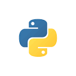
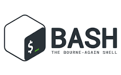
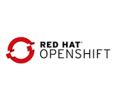
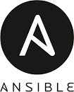
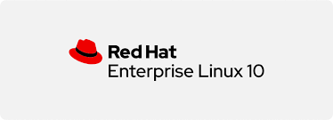
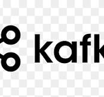

Hello, I'm
Devarapu Praveen
Site Reliability Engineer & DevOps Professional


Hello, I'm
Site Reliability Engineer & DevOps Professional
Get To Know More
SRE
Olive Crypto Systems
B.Tech in Information Technology
GMR Institute of Technology
I am an experienced DevOps and Site Reliability Engineer (SRE) specializing in maintaining highly available, zero-downtime banking and blockchain application infrastructures. I have a proven track record of managing enterprise-level distributed architectures, cluster operations, and end-to-end production routing.
Notably, my infrastructure functionality and operations support for the CBDC application earned recognition with a prestigious award at the G20 Summit by the Government of India. I excel at automation, continuous monitoring, disaster recovery migration, and seamless multi-region cluster maintenance.
Explore My Stack






Browse My Production
Maintained a high-availability Hyperledger Fabric OpenShift cluster without downtime. Handled image deployments, automated routing, DR migration, and business logic troubleshooting.
Architected a 3-tier distributed microservices app in a cloud-native Kubernetes cluster. Engineered an integrated ELK Stack & Elastic APM monitoring engine to aggregate container log streams (stdout/stderr) and trace application runtime performance via centralized Kibana dashboards.
Get in Touch